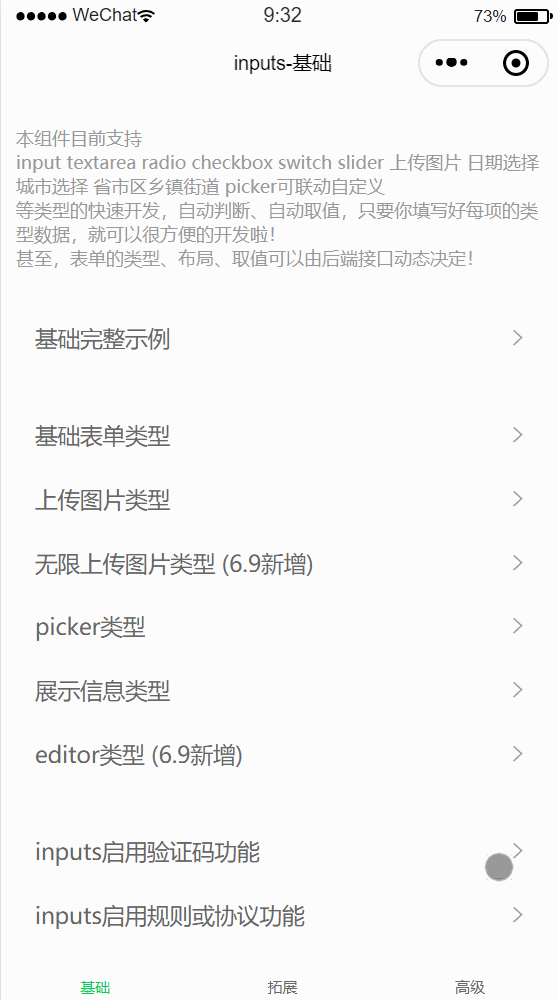
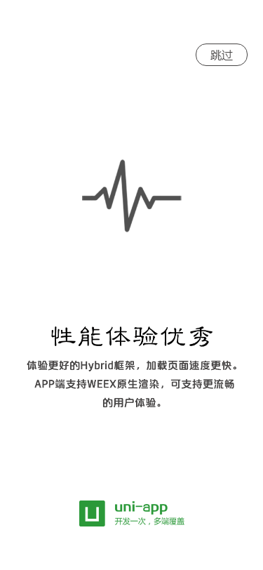
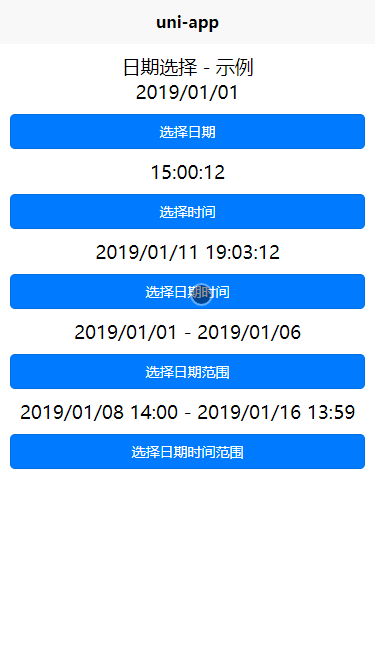
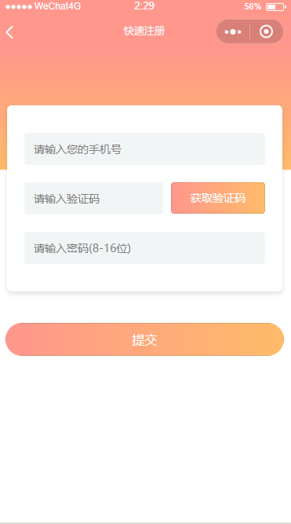
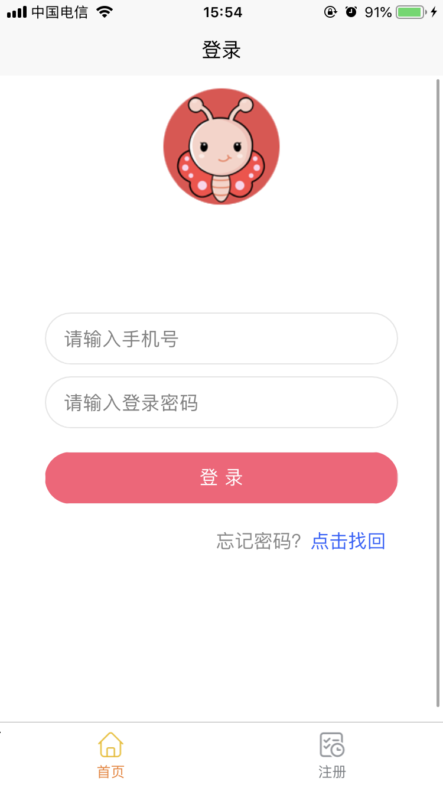
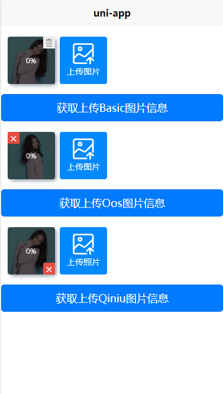

原文出处:本文由博客园博主老梁讲Java提供。
原文连接:https://www.cnblogs.com/sky-chen/p/11041413.html
原文连接:https://www.cnblogs.com/sky-chen/p/11041413.html
1. uni-app学习（三）
1.1. async/await使用
- 表示异步处理，可使用then函数继续操作，返回的是Promise
async function timeout() {
return 'hello world'
}
timeout().then(result => {
console.log(result);
})
console.log('虽然在后面，但是我先执行');先打印下面这句
- await是等待的意思，它后面可以放任何表达式，不过我们更多的是放一个返回promise 对象的表达式
// 2s 之后返回双倍的值
function doubleAfter2seconds(num) {
return new Promise((resolve, reject) => {
setTimeout(() => {
resolve(2 * num)
}, 2000);
} )
}
async function testResult() {
let result = await doubleAfter2seconds(30);
console.log(result);
}
testResult();- 遇到await 之后，代码就暂停执行了， 等待doubleAfter2seconds(30) 执行完毕
参考这篇博客
1.2. request网络请求封装，统一添加token等
- 在vue的编写中，我们通常都会封装token，uni-app自带的uni.request暂时不能实现类似拦截器的需求，所以需要自己封装；本着不重复造轮子的原则，在uni插件市场还是有这种插件的，直接拿来改造下就行了
- 插件地址在这
- 同样可以选择这个 两者是类似的，不过这个只有js文件，模仿axios的调用方式，熟悉axios可以试试这个啊
1.3. 阿里百川
- 这个好像是电商专用，说明说是用于android和ios的授权登录、退出、购物车、订单等，和淘宝相关，没做过电商不怎么了解，这里记一笔，如果以后有机会用到在找出来
- 插件地址
1.4. 聊天模板
- 包含了chat模板，文字，语音，红包等，这个也是在特定场景用的到，不过概率还是蛮高的，可以记录下
- 模板地址
1.5. QS-inputs
- 作者称是带动画的自动化基础表单组件，看名字也知道，只是对input的各种深化
- 插件地址
- 演示


1.6. app引导页
- app第一次打开时候的引导页示例，地址点这
- 例子如下
 - 我尝试下这个例子，其实也没做啥工作，就是在缓存记下了个标记，每次启动检查下，是否已启动过，启动过就不显示引导页了，直接跳转首页，而引导页可以其实也简单的，可以参考下
1.7. 多场景日期选择器
- 插件地址
- 随便给个例子

1.8. 仿微信朋友圈模版
- 地址
- 功能：仿微信朋友圈页面模版,点赞,评论,发布,图片上传,预览,压缩等等
- 例子
1.9. 登录|注册|忘记密码|模板
- 点击这里
- 例子

- 简单登录注册例子

1.10. 图片上传（阿里云、七牛、腾讯云、后端上传）
- 点击这里
- 示例
